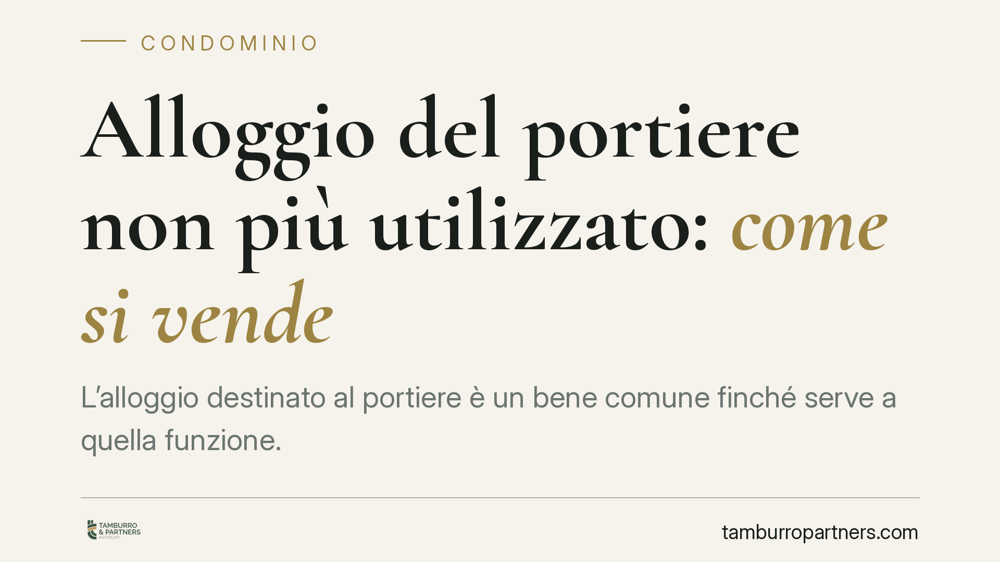

Alloggio del portiere non più utilizzato: come si vende
L'alloggio destinato al portiere è un bene comune finché serve a quella funzione. Ma cosa accade quando il servizio di portierato cessa stabilmente e i locali restano inutilizzati? Il tema tocca il regime proprietario del bene, le maggioranze necessarie e la possibilità per il singolo condomino di chiederne la vendita. Vediamo come la giurisprudenza di legittimità inquadra la questione e cosa può fare in concreto il comproprietario.

Il punto di partenza: bene comune per destinazione
L'alloggio del portiere rientra, di norma, tra le parti comuni dell'edificio ai sensi dell'art. 1117 c.c., che include tra i beni di proprietà comune i locali destinati ai servizi condominiali, come appunto l'abitazione del portiere.
Si tratta però di una comunione "qualificata" dalla destinazione: il bene è comune proprio perché serve a una funzione collettiva. Il legame con la cosa comune principale (l'edificio) e l'uso condiviso spiegano perché, finché dura la destinazione, non si applichino le regole ordinarie sullo scioglimento.
Quando la destinazione viene meno
Il problema sorge quando il servizio di portierato cessa in modo stabile — ad esempio per soppressione deliberata dall'assemblea o per abbandono di fatto protratto nel tempo — e l'alloggio resta inutilizzato.
Secondo un orientamento consolidato della giurisprudenza di legittimità, il venir meno stabile e definitivo della destinazione originaria fa perdere al bene il carattere di parte comune "funzionale". Il locale non scompare, ma il suo regime tende a riconducersi a quello della comunione ordinaria disciplinata dagli artt. 1100 e seguenti c.c.
La distinzione non è teorica. Nella comunione condominiale legata alla destinazione comune non è di regola ammesso lo scioglimento del vincolo sul singolo bene. Nella comunione ordinaria, invece, opera la regola dell'art. 1111 c.c.: ciascun partecipante può sempre domandare lo scioglimento della comunione.
Il nodo probatorio
Il passaggio decisivo è la prova. Non basta affermare che il portiere non c'è più: occorre dimostrare che la destinazione è venuta meno in via stabile e non reversibile, e non per una sospensione temporanea o una semplice inattività occasionale.
Su chi intende far valere il nuovo regime grava quindi l'onere di provare la cessazione definitiva della funzione. È un punto spesso sottovalutato e che, in sede giudiziale, può determinare l'esito della controversia.
Cosa cambia in concreto
La differenza pratica riguarda le maggioranze.
Per decisioni sulla gestione o sulla sorte di un bene comune condominiale servono le maggioranze assembleari previste dal codice, con quorum spesso elevati e, in alcuni casi, l'unanimità o il consenso di tutti i comproprietari.
Se invece il bene è ricondotto alla comunione ordinaria, cambia lo scenario: il singolo comproprietario non ha bisogno di una delibera assembleare unanime per liberarsi della quota. Può agire ex art. 1111 c.c. e chiedere lo scioglimento della comunione, con conseguente vendita e ripartizione del ricavato in proporzione alle quote.
Va ricordato un limite rilevante. Se il bene non è comodamente divisibile — ipotesi tipica di un alloggio — non si procede a divisione materiale. In tal caso trovano applicazione le regole sui beni indivisibili: l'art. 1116 c.c. richiama la disciplina della divisione ereditaria, e in particolare l'art. 720 c.c. prevede l'attribuzione del bene a uno dei condividenti o, in mancanza di accordo, la vendita all'incanto con distribuzione del prezzo.
Cosa fare in concreto
- Verificate la natura del bene nel regolamento condominiale e nei titoli di acquisto: accertate se l'alloggio sia qualificato come parte comune e con quale destinazione.
- Documentate la cessazione del servizio: delibere di soppressione del portierato, periodo di inutilizzo, eventuale assenza di contratti di lavoro. È la prova della cessazione stabile a reggere ogni iniziativa.
- Portate la questione in assemblea prima di agire: una decisione condivisa sulla vendita evita contenzioso e riduce tempi e costi.
- Valutate l'azione ex art. 1111 c.c. solo dopo un'analisi del caso concreto: la riconducibilità alla comunione ordinaria non è automatica e va dimostrata.
- Consultate un legale per impostare correttamente eventuale divisione, attribuzione o vendita all'incanto del bene indivisibile.
È opportuno non muovere da semplici presunzioni: la differenza tra comunione condominiale e comunione ordinaria incide direttamente sulle strade percorribili e sugli oneri probatori.
Disclaimer
Contributo informativo a cura di Tamburro & Partners - Avv. Giuseppe Tamburro. Non costituisce parere legale.
Ogni condominio ha una storia a sé.
Se gestisci un'amministrazione e vuoi un confronto su una specifica questione condominiale, scrivi allo studio. Ti rispondiamo entro un giorno lavorativo.